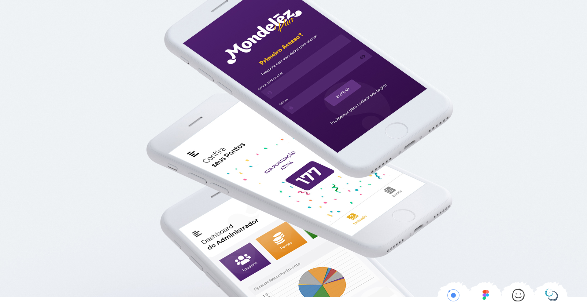

Mondelēz International is an American multinational confectionery, food, holding,
and beverage and snack food company right in over 150 countries around the world.
Inside their factories, the appeal for the commitment of employees with the quality,
punctuality, and teamwork need to be consistent. For that, they hired us to give them an app
that could bring to collaborators the feeling of belonging and be rewarded for the excellent
work over the months.

Validating the problem
They want to validate properly the effort of the Mondelēz' collaborators- They need something easy for both managers and collaborators to access.
- They want something that attracts the eyes.
- The collaborators need to choose by themselves what they want as a gift.
- They need a project asap, participating though the steps and testing with real users.
Solutions
- Develop an App for the Mondelēz' collaborators.
- Design an attractive interface following the Mondelēz' patterns.
- Have one inside store to exchange points for products.
- Project build in Ionic developed with Scrum Methodology and weekly user's testing from inside Mondelēz.
Graphic's Elements
I worked as a full Graphics, UI, and UX Designer for this project. Since the logo of the project, the application's logo and screen's image for both stores (play and apple) to interface and user test. Bellow, you can see some examples, including the voucher image that would propper indicate when, where, and what the collaborator would exchange his points. The color pallet used was the same as Mondelēz, following their brand book and the typography used in the project.Lo-Fi Wireframe
The lo-fi wireframe in this project was very important since working in an Agile methodology we need the things working as they should during the development, with sprints of one week we couldn't afford to have the wrong information on the interface to conduct the user tests at the end.Visual Design
To this project, we focused on the main elements that bright the Mondelēz' purple signature. I wanted to highlight the colors and the fun environment of this application's purpose.